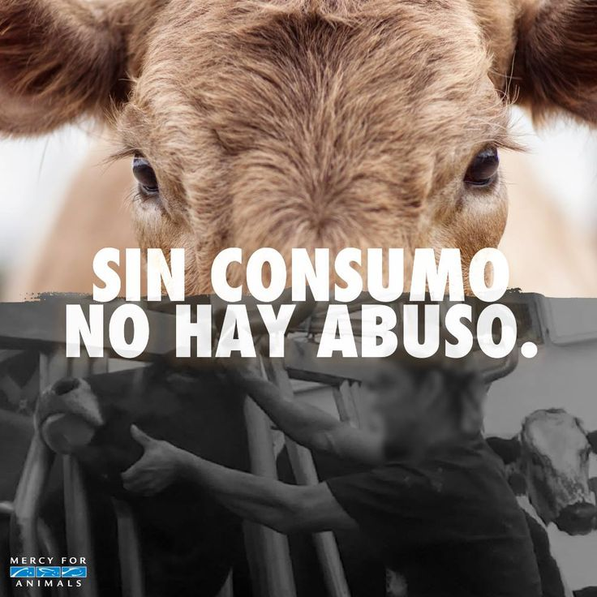

Historia del veganismo
¿Quienes fueron los primeros veganos?
¿Hasta dónde debemos remontarnos?Las dietas de nuestros antepasados, vivieran donde vivieran, puede que no fueran veganas tal y como conocemos ese concepto hoy en día, pero en muchos casos estaban basadas en plantas. Y las pistas de las dietas de los primeros humanos están en nuestro propio cuerpo, que, como el de otros primates, está perfectamente adaptado a la materia vegetal, como las frutas y las hojas, junto con alguna que otra lagartija. Dice Rob Dunn, biólogo de la Universidad Estatal de Carolina del Norte y autor de este interesantísimo artículo: «la verdad es que durante la mayor parte de los últimos veinte millones de años de la evolución de nuestro cuerpo, a través de la mayoría de los grandes cambios, comíamos fruta, frutos secos, hojas y algún que otro insecto, rana, pájaro o ratón. Aunque a algunos de nosotros les vaya bien la leche, a algunas personas les vaya mejor que a otras el almidón y a otres les vaya mejor o peor el alcohol, todes tenemos la maquinaria básica para comer fruta o frutos secos sin problemas.» El arqueólogo Dr. Richard Leakey explica además las razones del predominio vegetal de nuestros antepasados: «No se puede desgarrar la carne con la mano, no se puede desgarrar la piel con la mano, y no habríamos sido capaces de enfrentarnos a las fuentes de alimento que requerían esos grandes caninos». Su teoría sugiere que los humanos recurrieron a la carne animal por necesidad cuando hubo escasez de alimentos básicos de origen vegetal, pero lo más probable es que procedamos de una línea ancestral que basaba su alimentación en las plantas.
